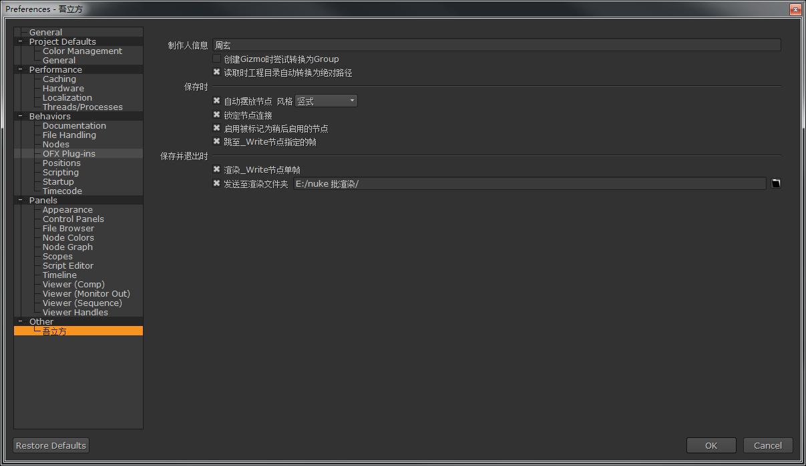
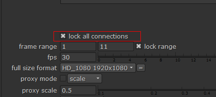

首选项设置¶
使用快捷键Shift+S打开首选项设置
通用¶
制作人信息¶
制作人名称 会自动添加至工程设置
创建Gizmo时尝试转换为Group¶
自动尝试转换Gizmo
Gizmo的优势在于文件小, 并且节点随插件自动更新
Group的优势在于脱离插件一样可以使用
读取时工程目录自动转换为绝对路径¶
自动转换工程目录
保存时使用的是相对路径¶

再次打开变为绝对路径¶
保存时¶
自动摆放节点¶
自动整理摆放节点
选择竖式的话是使用 整理所选节点(竖式摆放)
锁定节点连接¶
锁定节点连接, 防止误操作
要取消锁定, 按S打开工程设置然后取消 lock all connections 的勾选
启用被标记为稍后启用的节点¶
启用被标记为稍后启用的节点
参见标记为稍后启用
跳至_Write节点指定的帧¶
设置当前帧为wlf_Write的指定帧
保存并退出时¶
渲染_Write节点单帧¶
执行wlf_Write的输出单帧
发送至渲染文件夹¶
将保存的文件复制一份到指定文件夹用于批渲染